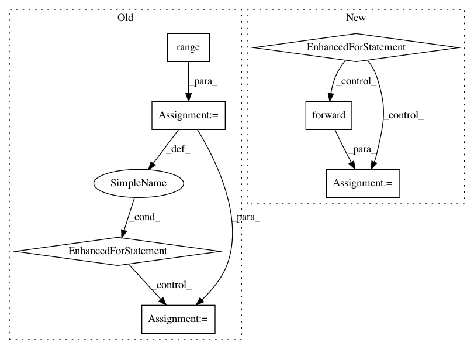

8d9e41ce407e88ec3404602d26bc7b019e31ffc2,OpenNMT/train.py,,eval,#Any#Any#Any#,111
Before Change
model.evaluate()
for i in range(data.batchCount()):
batch = onmt.utils.Cuda.convert(data.getBatch(i))
outputs = model.forward()
loss = criterion.forward(outputs, batch.getTargetOutput())
total = total + batch.targetNonZeros
model.training()
return math.exp(loss / total)
After Change
model.evaluate()
for src, tgt in data:
outputs = model.forward(src)
loss = criterion.forward(outputs, tgt)
model.training()
return math.exp(loss / data.len)
In pattern: SUPERPATTERN
Frequency: 4
Non-data size: 7
Instances
Project Name: OpenNMT/OpenNMT-py
Commit Name: 8d9e41ce407e88ec3404602d26bc7b019e31ffc2
Time: 2016-12-26
Author: alerer@fb.com
File Name: OpenNMT/train.py
Class Name:
Method Name: eval
Project Name: cornellius-gp/gpytorch
Commit Name: c9b787a1fa1757e692db3f5eaff30a372b0c9332
Time: 2018-09-18
Author: krajkumar@stanford.edu
File Name: gpytorch/kernels/lcm_kernel.py
Class Name: LCMKernel
Method Name: forward
Project Name: cornellius-gp/gpytorch
Commit Name: ad31d8e18208864bd2aa32ed2f555ae25decece1
Time: 2018-09-23
Author: krajkumar@stanford.edu
File Name: gpytorch/kernels/lcm_kernel.py
Class Name: LCMKernel
Method Name: forward